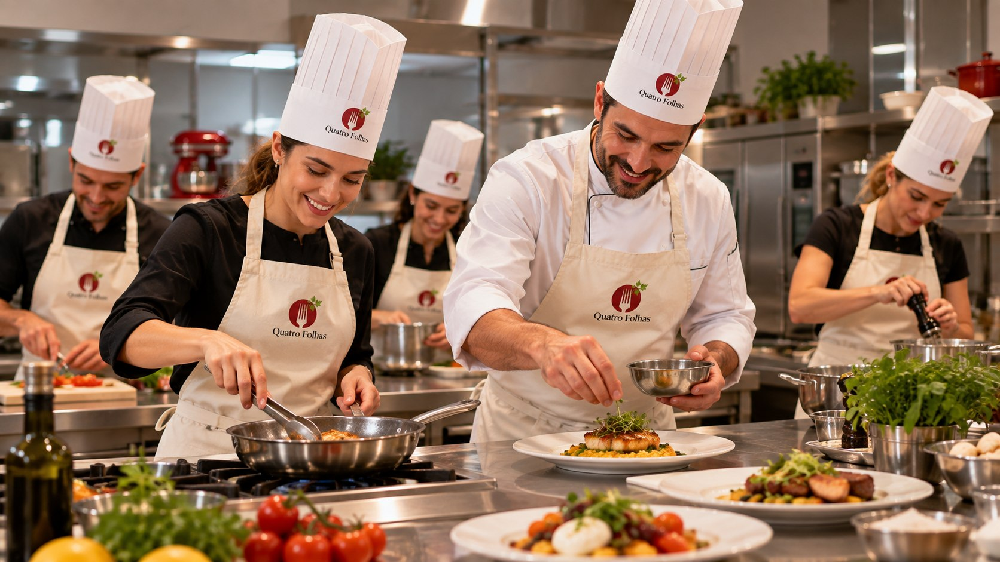

Integração
A equipe sai da rotina e vive uma dinâmica prática em cozinha profissional.
Team building
Em uma dinâmica gastronômica conduzida, os participantes colaboram, dividem tarefas, tomam decisões e celebram juntos o resultado à mesa.
A equipe sai da rotina e vive uma dinâmica prática em cozinha profissional.
Os participantes dividem tarefas, comunicam decisões e constroem juntos.
O encontro termina com mesa compartilhada, conversa e memória positiva.

Os participantes precisam se organizar, dividir tarefas e construir um resultado juntos.
A cozinha tira a equipe do formato de reunião e abre espaço para interação verdadeira.
A experiência pode enfatizar integração, liderança, comunicação, acolhimento ou celebração.
O encontro termina com conversa, mesa compartilhada e memória positiva.
Formatos
A experiência é desenhada conforme objetivo, número de pessoas, tempo disponível e perfil da equipe.
Equipe cozinha junta com orientação profissional e degustação final.
Participantes recebem uma caixa com ingredientes surpresa e criam um prato em equipe, exercitando criatividade, estratégia e colaboração.
Grupos colaboram para preparar receitas, apresentar resultados e celebrar o processo.
Uma experiência mais relacional, com preparo, mesa, conversa e celebração.
O roteiro valoriza comunicação, liderança, integração, acolhimento ou celebração.
Equipe
A cozinha cria um ambiente leve para aproximar pessoas e reduzir barreiras.
Cada participante contribui com uma parte do processo para construir o resultado final.
A experiência termina com degustação, conversa e celebração do grupo.
Roteiro
O team building gastronômico funciona melhor quando há um objetivo claro. A partir dele, a escola desenha a dinâmica, o nível de desafio e o momento de fechamento.
A equipe chega, entende a proposta e se organiza em grupos ou estações.
Os participantes cozinham, dividem tarefas e precisam se comunicar para avançar.
Os pratos ganham montagem, apresentação e leitura do resultado coletivo.
O encontro termina com mesa compartilhada, conversa e fechamento da experiência.
Proposta corporativa
Informe empresa, objetivo e quantidade estimada de participantes. Nossa equipe retorna pelo WhatsApp.